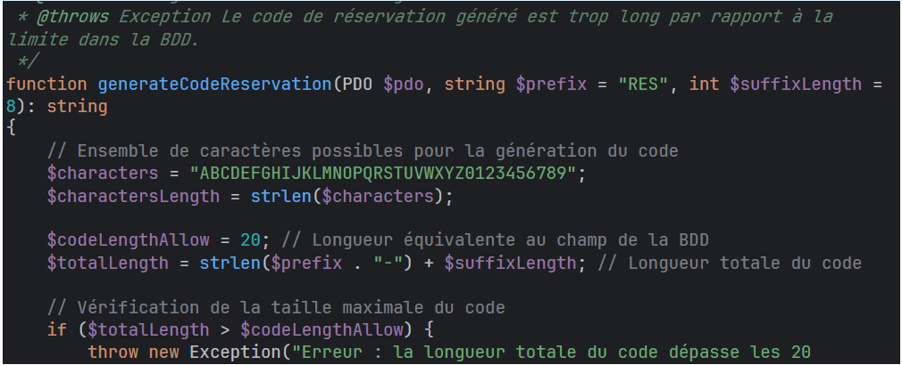
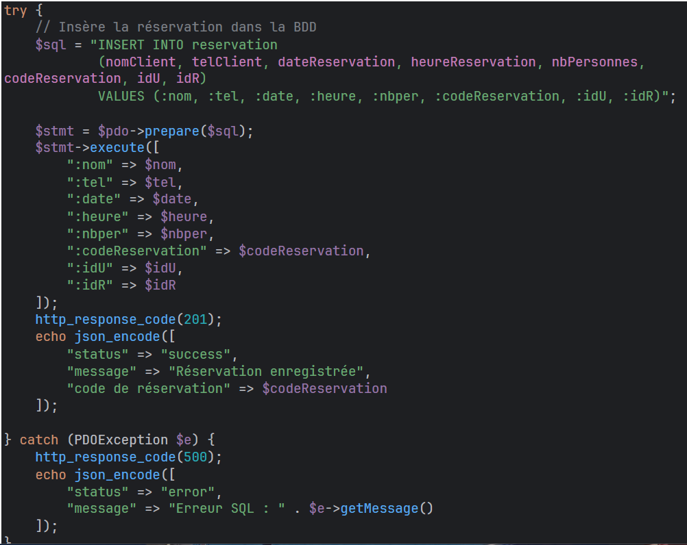

Dans le cadre du Projet 2 Android – Itération 3, j’ai réalisé le Ticket 3 qui consistait à développer la partie API permettant l’enregistrement d’une réservation en base de données.
Ce développement a été effectué sur la branche iteration3 (API). L’objectif était de permettre à l’application Android d’envoyer une réservation via une requête HTTP et de l’enregistrer de manière sécurisée en base de données.
J’ai tout d’abord développé une fonction generateCodeReservation() permettant de générer un code de réservation unique pour chaque client. Ce code personnalisé est utilisé comme identifiant de réservation et permettra notamment la suppression ultérieure d’une réservation.
Cette fonction prend en paramètres :
Le code généré est ensuite vérifié en base de données afin d’éviter tout doublon. Une boucle do/while est utilisée pour garantir l’unicité du code. Une gestion d’erreurs via try/catch permet de contrôler les éventuels problèmes liés à la longueur du champ ou à la base de données.
J’ai ensuite développé le script insertReservation.php dont le rôle est d’insérer une nouvelle réservation dans la base de données. Les données sont récupérées via une requête HTTP POST (ou GET pour les tests).
Une validation est effectuée afin de vérifier que tous les champs nécessaires sont bien présents. En cas de champ manquant, l’API renvoie un code HTTP 400 avec un message d’erreur.
Lorsque les données sont valides, un code de réservation est généré puis la réservation est insérée en base de données. En cas de succès, l’API renvoie un code HTTP 201 confirmant la création de la réservation.
Objectif : S’assurer que l’ajout d’une réservation dans la base de données fonctionne correctement.